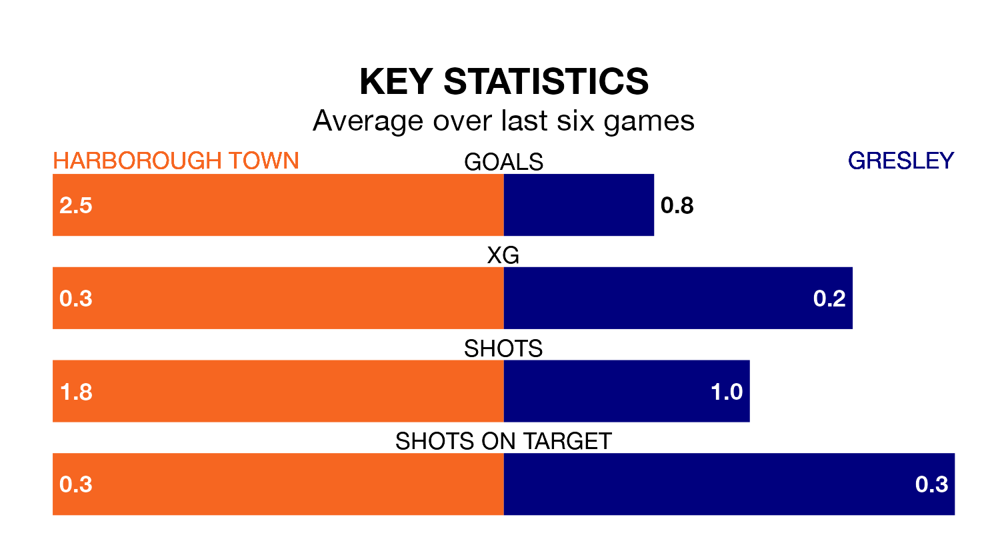

Mid-season relegation candidates Gresley face a challenge away against high-flying Harborough Town on Saturday.
Gresley are 18th in the Northern Premier League Division One – Midlands table, and have picked up four wins and six draws in their 25 games to date.
Harborough, meanwhile, are second in the standings with 51 points, having won 16 and drawn three of their first 23 matches, and are one point behind table-toppers Spalding United.
With 51 goals in 23 games so far this season, Harborough are the league's second-highest scorers with 2.2 goals per game. And they are conceding fewer than average, letting in 17 goals at a rate of 0.7 per game.
Gresley, meanwhile, are below average scorers, with 1.1 goals per game, compared to a league average of 1.5. They have conceded 2.5 goals per game.
Town are in good form in Northern Premier League Division One Midlands, with four wins and a draw from their last six games.
With a win and a draw over that period, the visitors' form is much worse – they have taken four points from 18, compared to the home team's 13.
In the last three years, Harborough and Gresley have played each other on three occasions. Harborough won two of them and they drew once.
Their last meeting was on November 14, when Harborough won 6-0 away.
Harborough's last match was on January 13, a 4-0 win against Shepshed Dynamo.
Gresley lost 2-1 against Walsall Wood last time out, also on January 13.
Updated: 09:18 (UTC), 23/01/24